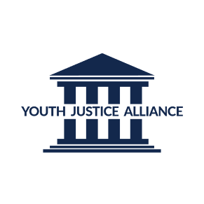

Youth Justice Alliance
Developing data-driven investment and CRM recommendations for a nonprofit organization.
Context
This nonprofit strategy case study examines a board-level engagement with Youth Justice Alliance through the McCombs Board Fellows program. As a non-voting board fellow, I worked alongside YJA's leadership to support strategic initiatives aimed at strengthening organizational capacity and long-term impact. The work focused on applying business strategy principles to a mission-driven organization, addressing challenges related to growth, resource allocation, and operational effectiveness while operating within a nonprofit governance environment.
Goals
The primary goal was to support Youth Justice Alliance's leadership with strategic analysis and recommendations that strengthened organizational effectiveness and long-term impact. Secondary goals included evaluating investment opportunities, improving internal systems such as CRM and data tracking, and applying a board-level perspective to help prioritize initiatives within a resource-constrained, mission-driven environment.
How I Worked
The work was conducted as a board-level engagement through the Board Fellows program, partnering with another student fellow to support Youth Justice Alliance's leadership and board members. I contributed to strategic analysis across investment opportunities, internal systems, and organizational priorities, bringing a business and analytics lens to mission-driven decision-making. Working collaboratively, we helped translate analysis into clear recommendations and supported leadership through structured presentations and working sessions.
Key Decisions & Tradeoffs
We prioritized strengthening Youth Justice Alliance's operational foundation over short-term program expansion, trading immediate impact for long-term sustainability and scalability. In evaluating investment options, we favored liquidity to ensure readily available cash for ongoing initiatives, accepting lower potential returns to avoid locking funds away for extended periods. We also recommended a CRM solution that balanced functionality and future scalability with ease of adoption, recognizing the capacity constraints of a lean nonprofit team.
Impact
The work delivered board-ready recommendations that strengthened financial decision-making and operational clarity at Youth Justice Alliance. Leadership proceeded with both the investment approach and CRM recommendations, supporting improved cash management, better data visibility, and more coordinated internal processes. The outcomes reinforced the value of applying disciplined strategy and analytics within a mission-driven, resource-constrained organization.
What This
Project Shaped
This work strengthened my ability to operate in a board-level advisory capacity within a mission-driven organization. It sharpened my judgment around balancing financial discipline, operational feasibility, and social impact, and reinforced how thoughtful strategy and collaboration can meaningfully influence organizational decision-making even in resource-constrained environments.